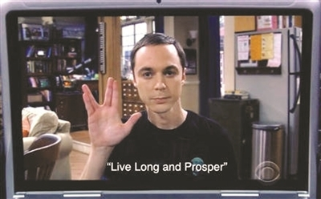

瓦肯举手礼详解
1 起源与背景
瓦肯举手礼（Vulcan Salute），又称“火神答复敬礼”，最初出现在美国著名科幻作品《星际迷航》（Star Trek）中，是瓦肯人用于问候的标志性手势 12。该手势由斯波克（Spock）的扮演者伦纳德·尼莫伊（Leonard Nimoy）在拍摄过程中提出，灵感来自他童年时参加犹太教祈福仪式时见到的“kohane blessing”手势——该手势象征希伯来字母“ש”，寓意“上帝”123。
2 手势做法
瓦肯举手礼的具体做法如下：
- 将中指与食指并拢
- 将无名指与小指并拢
- 尽可能张开大拇指，与其余手指分开
这一手势对手指的灵活性有一定要求，现实中并非每个人都能轻松做到 23。
3 文化意义与流行
- 祝词：瓦肯举手礼常伴随一句著名的祝词“Live long and prosper”，中文常译为“生生不息，繁荣昌盛”或“健康长寿，繁荣昌盛”124。
- 象征意义：最初仅为虚构外星文明的问候方式，如今已成为科幻迷、科技圈、网络文化中“来自另一星球”的象征符号 243。
- Unicode 表情：2014 年，瓦肯举手礼被纳入 Unicode 标准，成为🖖（U+1F596）表情符号 1。
4 趣闻轶事
5 在流行文化中的影响
6 总结
瓦肯举手礼不仅是《星际迷航》的标志性符号，更因其独特的文化内涵和象征意义，在全球范围内流行，成为科幻文化和网络社交中的经典手势 124。
参考文献：